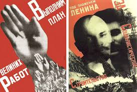
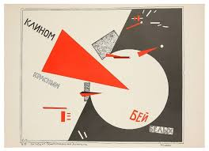

Constructivism was an artistis and archtectural philosophy that originated in russia begining in 1913 by vladmir tatlin.
Russian contructivism was a movement that was active from 1913 to 1935. several revolutionary directions in art and design began, for later to develop into modernism, which today we know so well from the majority of the design we surround ourselves in our everyday lives.One might argue that Russia first came up with the new modernist ideas. Russian futurism served as the basis for the new art form. It initially led to Russian constructivism and later to 'der Stijl' and 'Bauhaus' in the West. Bauhaus is today considered to be the cradle of modernism.Within constructivism this meant that, in essence, the expressive personal touch was rejected, looking away from the illustrative and hand-made expressions.One sought for pure and universal expression. Ie. ornaments were removed from the design and they saw the simple geometric shapes as an objective reality in itself.

fig2: russian constructivismBut at that time there were thoughts that art should not be reserved for the upper class.That art can be constructed, abstract, without ornaments, new and provocative – and for the people.

fig3: semi circle and trianglesemi circlefrom russian constructivismIt was created by the Russian avant-garde but quickly spread to the entire continent.Constructivism influenced architecture, poetry, music, and even the consumer market and became the new everyday life in Russia of the time. In the mid-1930s the end of Russian constructivism began when Stalin ordered art to be realistic and not abstract, ie. the opposite of constructivism's foundations and ideas, which were instead replaced by socialist realism.El Lissitzky (1890 - 1941) is one of the most influential and famous designers from the period. He uses primary colours and geometric shapes in the belief that this would be the new universal visual language that would be understood by everyone."One of our utopian ideas is the desire to overcome the limitations of the substructure, of the earthbound. We have developed this idea in a series of proposals. [...] The idea of the conquest of the substructure, the earthbound, can be extended even further and calls for the conquest of gravity as such. It demands floating structures, a physical-dynamic architecture."(El Lissitzky (1929), in 'Basic Premises' in 'Rußland: Die Rekonstruktion der Architektur in der Sowjetunion', Moscow 1929, in Interrelationships Between the Art, in An Architecture for World Revolution, transl. Eric Dluhosch - MIT Press. Cambridge, MA: 1970)Lissitzky saw the square as the source of all creative unfolding. He is especially known for his famous propaganda poster: "Beat the Whites with the Red Wedge" where a red triangle, symbolizing the Communist rebel movements, pierces a white circle that would symbolize the Bolsheviks.El Lissitzky - Beat the Whites with the Red Wedge, 1919A poster that would encourage the people to revolution against the ruling regime.